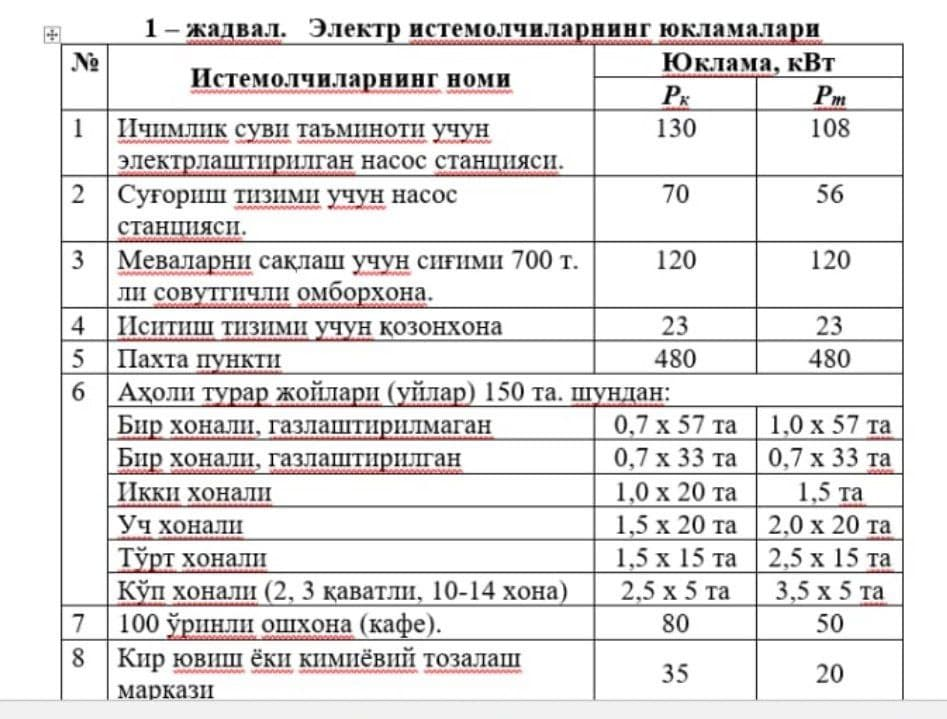
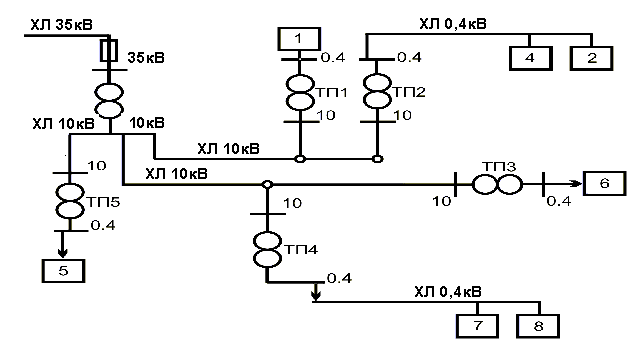

Reja:
1. Сув хўжалик объектлари ва қишлоқ жойларида.
2. Электр тармоқларидаги юкламалари.
3. Алоҳида олинган ёки умумий электр тармоқда иштирок этаётган барча электр истемолчилар.
Сув хўжалик объектлари ва қишлоқ жойларидаги электр истемолчилар асосан 35, 10, 04 кВ кучланишли ҳаво ва
кабел линиялари (ҲЛ, КЛ) ва 35/10, 35/6, 10/0,4 кВ кучланишли трансформатор подстанция
(нимстанция)ларидан ташкил топган. Шу сабабли электр тармоқларидаги юкламаларни ҳисоблаш қуйидаги
бандларни қамраб олади:
• Алоҳида олинган ёки умумий электр тармоқда иштирок этаётган барча электр истемолчилар юкламасини
ҳисоблаш;
• Паст кучланишли (380 ёки 220 Вли) электр тармоқ ҳисоби;
• Юқори кучланишли (35, 10, 6 кВли) электр тармоқ ҳисоби;
• Юклама токлари асосида сим кесимини ҳисоблаш ва стандарт кесимли симларни танлаш;
• Юкламалар асосида 0,4 кВли тармоқдаги йиғинди қувватни ҳисоблаш ва 10/0,4 кВли трансформаторни
танлаш;
• Юкламага асосан 10 кВли тармоқни ҳисоблаш ва 35/10 кВли трансформаторни танлаш.
Ҳисоб қуйидаги бандлардан иборат:
. Истемолчиларнинг кундузги (к) ва тун (т)ги максимал юкламани ҳисоблаш:
Кучланиши 0,4 кВли ҲЛ сидаги юклама тўла қувват (S) кўринишида, кундузги ва тунги юкламалар алоҳида
қуйидаги формула асосида ҳисобланади:
, (1) , (2)
Бу ерда:
SкI , SтI – истемолчи обекларнинг сутканинг кундузги ва тунги пайтидаги максимал юкламаси миқдори (1
-
жадвал).
kёпI - истемолчиларнинг ёппасига (айни олинган бир вақт ичидаги) ишлаш коэффициенти бўлиб у 1 - иловадан
топилади (Бунда бир тармоққа уланган бир гуруҳ истемолчиларнинг юклама тури (актив, реактив) бир
хиллилигига ва ўзаро миқдор жиҳатидан 4 маротабадан ортиқ фарқ қилмаслигига эътибор берилади).
2. Кучланиши 10/0,4 кВ ли трансформатор подстанция (ТП) ларнинг юкламасини ҳисоблаш.
10/0,4 кВли трансформатор подстанциясининг юкламасини ҳисоблашда 7 – номограммадан фойдаланилади.
0,4 кВ ли узатилувчи линиялардаги кундузги (SкI) ва тунги (SтI) максимал юкламалар алоҳида ҳисобланади.
Аксарият ҳолларда истемолчиларнинг электр юкламаси ток (I) ёки актив қувват (Р) кўринишида берилганлиги
сабабли 10/04 кВли трансформаторнинг ҳисоб қувватини аниқлашда ушбу формуладан фойдаланамиз:
Актив қувват коэффициенти бўлган “cos” нинг қийматини топишда 8 – номограмма расмдан ёки формула
ўринлидир.
3. Кучланиши 0,4 ва 10 кВ ли тарқатиш тармоқларидаги ҳаво линиялари юкламаларни ҳисоблаш
Юкламалар йиғиндисини топиш усули билан 10/0,4 кВ ли трансформатор подстанциясидаги кундузги ва тунги
юкламалар 1 ва 2 ифода асосида топилади. kёI қийматини топишда иловадаги 3 -жадвал асқотади.
4. 35/10 кВли ТП юкламасини ҳисоблаш.
10 кВ кучланишли узатиш линиялардаги юкламалар 8 –номограмма воситасида ҳисобланиши мумкин.
35/10 кВ ли трансформаторнинг қуввати (3) формула билан, актив қувват коэффициенти эса иловадаги 4 –
жадвалдан топилади. Бунинг учун 1- расмдаги ТП1, ТП2, ТП3, ТП4 ва ТП5 трансформаторларининг барча
юкламалари жамланади ва иловадан кучланиши 35/10 кВли подстанцияга стандарт қувватли трансформатор
танланади].
Эслатма, трансформаторни танлашда атроф муҳитнинг шартлари, электр истемолчиларнинг тури (актив,
реактив), электр тармоғининг қайси режимда (кундузги, тунги) ишлаши, захира манбаанинг мавжудлиги,
трансформаторни совутиш тизими (мойли, қурук ва ҳ.қ.) кабилар инобатга олиниши шарт.
Берилган: Объектдаги электр истеъмолчиларнинг юкламалари ҳақидаги маълумотлар 1 – жадвалда, жойлашагн ўрни, оралиқ масофалари ҳакидаги маълумотлар 1 – расмда берилган. Ҳисобланг: ҳаво линияларидаги ўтказгич кесимини, кучланиши 10/0,4 ва 35/10 кВ.ли трансформатор подстанцияларидаги трансформаторлар қувватини ҳисобланг ва стандарт қувватли трансформаторларни танланг. 
Танланган объектнинг бош плани устига электр таъминот тармоғининг схемасини чизамиз ва
трансформатор подстанцияларни белгилаймиз .
Эслатма: Электр схемасидаги истемолчиларинг тартиб рақамлари уларнинг 1-жадвалдаги номланишига мос
келади.Электр схемаларни тузишда ҳар бир истемолчи объектнинг жойлашувини техник ва муҳит талабалари
асосида асослаш сўралади.

б) 3 - ТП учун: Рк Σ = Sт Σ = (150 · 0,7 · 0,35) = 36,75 кВт
в) 4 - ТП учун: Sк Σ = (80 + 30) · 0,85 = 93,5 кВт
Sт Σ = (50 + 30) · 0,85 = 68 кВт
Кучланиши 10/0,4 кВли трансформатор қувватини ҳисоблаш
а) 1 – ТП учун: cos = Sк /Sт cos = 0.78 (иловадаги 2-жадвал)
Sҳисоб = Рк /cos = 130 / 0,78 = 166 кВА;
б) 2 – ТП учун: Sк /Sт = 79 / 68 = 1,16 cos = 0,78
Sҳисоб = 79 / 0,78 = 101 кВА;
в) 3 – ТП учун: Sк /Sт = 1 cos = 0.8
Sҳисоб = 36,75/0.8 = 48 кВА;
г) 4 – ТП учун: Sк /Sт = 93,5 / 68 = 1,41 cos = 0,75
ҳисоб = 93,5 / 0.75 = 124 кВА;
Эслатма: Тўла қувватнинг ҳисобий кўрсаткичи Sҳисоб ни аниқлашда трансформатор подстанциясидаги
ёки истемолчидаги айни олинган пайтдаги эквивалент максимал қувват кўрсаткичидан фойдаланилади.
Эквивалент максимал қувватни танлашда трансформатор подстанцияси ёки истемолчининг сутканинг айни
олинган пайтидаги (кундузги ёки тунги) минимал (паст) қийматининг максимал (юқори) эквивалент қийматга
бўлинган нисбати қабул қилинади (Sк / Sт да Sт максимал қийматга эга). Трансформаторнинг ҳисобий қуввати
Sҳисобни стандарт қийматгача яхлитлаймиз ва иловадаги 9,10 жадвалдан стандат қувватли комплект
трансформатор подстанция (КТП)ни танлаймиз.
1 – ТП учун: Sҳисоб = 166 кВА, КТП-160 кВА;
2 – ТП учун: Sҳисоб = 101 кВА, КТП-100 кВА;
3 – ТП учун: Sҳисоб = 48 кВА, КТП-63 кВА;
4 – ТП учун: Sҳисоб = 124 кВА, КТП-160 кВА ни;
5 – ТП учун: Sҳисоб = 600 кВА, КТП-630 кВА ни танлаймиз
Эслатма: Трансформаторнинг стандарт қувватини танлашда аксарият ҳолларда Sстандарт > Sҳисоб қоидасига
амал қилинади. Чунки истемолчиларнинг юкламаси вақт ўтган саин ортиб боради. Агар истемолчилар электр
моторлардан ташкил топган бўлса «Электр ускуналардан фойдаланиш қоидалари»га биноан ушбу талабга қатъий
амал қилинади
1. 1 – жадвалдаги маълумотлар ва 1 – расмдаги электр схемадан фойдаланиб кучланиши
6 кВ
ли тармоқнинг юкламасини ҳисоблан, ўтказгич кесмини ҳисоланг ва стандарт кесмилисини танланг.
2. 1- жадвалдаги 1, 2, 3, 4, 5 объектлардаги тунги юкламани 50 кВт. га ошириб ҳисобни қайта
бажаринг.
3. 1- жадвалдаги 1, 2, 3, 4, 5 объектлардаги кундузги юкламаларни 100 кВт. га ошириб ҳисобни қайта
бажаринг.